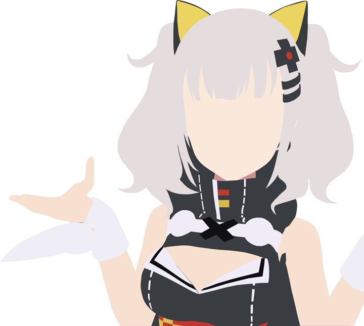

簡介
Vtuber的概念是由Kizuna AI在2016年11月以虛擬YouTuber的形式開創的，Kizuna AI也是公認的第一個虛擬YouTuber。自她大熱以後，2017年出現了大量的虛擬YouTuber。需要注意的是，由於Kizuna AI的設定為AI，導致一部分人將其他Vtuber的設定一併誤認為AI。而實際上，並非所有Vtuber的設定均為AI，其他的Vtuber各有各自的設定。
公認的虛擬YouTuber四天王是對YouTube頻道訂閱數最早突破10萬人的五人:絆愛(Kizuna AI)、Mirai Akari、輝夜月(Kaguya Luna)、電腦少女Siro、Nekomasu的統稱。其中Kizuna AI由於頻道訂閱數最早突破100萬而視作高於其他四人的存在。
本文引自萌娘百科，文字内容遵守【知识共享 署名-非商业性使用-相同方式共享 3.0】協議。